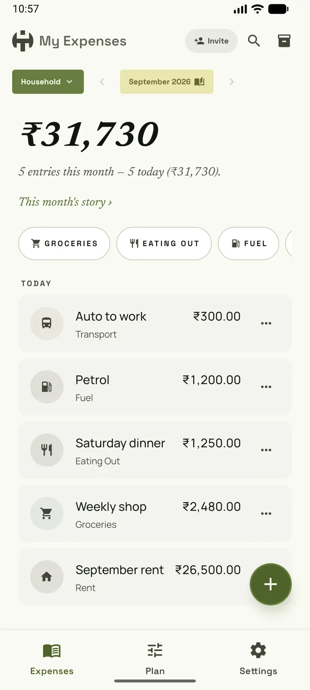
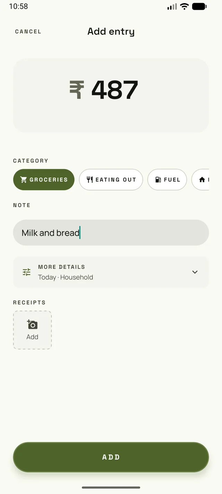

A quiet notebook for what you spend.
Write down what you spend. See it in a shape you can read. Kept alone, or shared with the people you live with — on your phones only, with no account and no server.
Free on the App Store and Google Play.

- No account
- No server
- Encrypted in transit
- CSV in and out
- No ads, ever
A notebook, not a dashboard.
OurPot is a quiet ledger for a household — kept alone or shared. You write, anyone you invite writes too, and what you record is what you see.
There are no charts that try to explain you, no streaks to keep up with, nothing coaching you about how you spend. Just what you wrote down, and what it comes to.
There is no OurPot server.
An entry is written to your own phone first, and only then shared — directly — with the other phones in your household. No machine of ours sits in the middle, so there is nothing for a write to wait on. Try taking a phone offline.
- Groceries₹1,240
- Bus fare₹60
Noise-encrypted
- Groceries₹1,240
- Bus fare₹60
Both phones hold the whole ledger. Neither one is the copy of record.
One notebook. One person, or several.
A household is anyone who repeatedly shares real costs — a couple, roommates, a family, a travel group. Or just you: solo is a fully supported mode, not a waiting room. Nobody can find you or ask to join. It only ever holds the people you invited, whenever you decide to invite them.
-
01
Start a notebookOn your own
Open the app, pick a currency, start recording. Nothing to sign up for, nothing to confirm by email.
-
02
Pair a second phoneTogether
One device makes an invite, the other scans it. Both phones show the same twelve-character code; read it aloud, and the person joining confirms it matches.
-
03
Everyone writesAfterwards
Every member records into the same ledger. A phone that was off catches up on its own the next time the two can reach each other.
What is actually in the app.
Three tabs — Expenses, Plan, Settings. This is the whole of it.
-
01
Record and readExpenses
Pooled by default, split when it matters. Up to four receipts on an entry, and press and hold the add button to record several in a row.
-
02
Pots, budgets, categoriesPlan
Organise spending into pots — household, a trip, whatever fits. Set optional budgets per category and see where the month stands.
-
03
Recurring and upcomingPlan
Turn an entry into a recurring rule for rent, bills, or subscriptions. The next entry shows up under Upcoming.
-
04
SettlementPlan
One net figure per person for the month, across every split entry in it, so you can settle up without keeping a running tab. Pooled entries need no settling.
-
05
A currency per potCurrency
Each pot carries its own currency, chosen when you create it. A household default seeds new pots; existing pots keep what they were given.
-
06
A quiet sign-offMonth turn
An opt-in ritual at the end of a month: read it together, sign off, move on. It does not freeze anything.
-
07
Import and exportYour data
Bring a history in from a CSV, or from a bank or Google Pay PDF statement read on the phone itself. Export yours whenever you like — both under Settings › Your data. No lock-in.
-
08
A 24-word phraseRecovery
Thirty-two bytes of randomness, written down as words you can keep on paper. It restores who you are — see the limits below for what it does not restore.

Pooled by default.
Money is treated as ours. Record an expense and it lands in the shared pot — no one owes anyone anything, and there is nothing to settle later.
Split mode is there for the times it matters, one tap away on the same sheet, and stays out of the way the rest of the time.
Write one down, here.
A working ledger, in this page. Nothing is sent anywhere: it stays in this browser and nowhere else — the same bargain the app makes with your phone. When you install OurPot, bring it with you as a file.
Nothing recorded yet.
The file carries the columns OurPot’s importer reads, so Settings › Your data › Import a file takes it back. Pick the currency the pot you import into uses — a mismatch is refused rather than converted.
What actually leaves your phone.
What a stranger on the network sees
A 32-byte topic — BLAKE2b("ourpot:discovery:v1" || group key). Your household’s key is what goes into the hash, never what comes out of it.
How two phones find each other
The public Hyperswarm DHT that every Holepunch app shares. We run no bootstrap nodes and no relays, so there is no OurPot machine in your sync to breach or shut down. The first connection is a lookup and a handshake: on a home network it has taken from about ten seconds to a couple of minutes. After that, an entry crosses the open link as soon as it is written.
What the connection is
A Noise handshake keyed to your device’s own Ed25519 identity. The link is encrypted before a single entry crosses it, over Bluetooth exactly as over the internet.
Who can get into a household
Only someone holding an invite an existing member made. The invite is not enough on its own: both phones show the same code, and the person joining has to confirm it matches before the household is shared with them.
Where your signing key lives
Your phone makes its own key the first time you open the app, and that key signs every entry you add. It is kept in the iOS Keychain or the Android Keystore, marked for this device only, so it never rides along to iCloud or anywhere else.
Syncing with no internet at all
Two phones in the same room can sync over Bluetooth instead — off by default, in Settings › Household.
Where entries rest
In the app’s own storage on each phone, under iOS Data Protection or Android’s file-based encryption. The app refuses to start if it finds itself on storage the operating system does not protect.
What our own encryption adds
The household’s ledger and its receipts are also encrypted with a key that belongs to the household. That key is kept on the same phone, so this layer keeps a stray copy of the files unreadable; the phone’s own encryption is what protects the phone. Receipt photos cached for display rely on the phone’s encryption alone.
How app updates arrive
Peer-to-peer as well, from an update channel we publish and keep online. The machines we run for it see your phone’s IP address, as any app’s update check would. Nothing of yours travels on that channel, and your phone joins it under a throwaway key rather than your identity. The privacy policy has the detail.
What we collect
Nothing. There is no analytics SDK in the build, and nowhere for one to report to.
Not a budgeting app. Not a Splitwise replacement.
What it does not do is as deliberate as what it does — and this is the whole list, not the flattering half.
-
No account, no password, no email
There is nothing to create, and nothing to be locked out of. You open it and start.
-
No bank connections
Nothing reads your accounts. You write down what you spent, or hand the app a CSV or a statement PDF, which it reads on the phone and never uploads.
-
No analytics, no crash reports
We could not see how you use this even if we wanted to. Nothing in the app measures you, and there is no account any measurement could be attached to.
-
No notifications
The app never asks for your attention. It has no way to — nothing in it can send you anything.
-
No ads, no purchases, no subscription
Free, and not the kind of free where you are the product. There is no server to pay for.
-
No scores, streaks, or advice
Nothing here grades your month. It records what you tell it and shows you the total.
What having no server costs you.
These are real trade-offs in this release, not fine print. You should know them before you trust a notebook with a year of your spending.
Losing every device loses your entries.
If another household phone still holds the notebook, a replacement pairs and the history comes back. Alone, your safety net is the encrypted backup file you export yourself. With no other device and no backup, the 24-word phrase brings back your identity but not your entries — they lived only on that phone.
The encrypted backup export is solo-only.
Once a household has admitted a second writer, one device's log is no longer the whole ledger, so the export is deliberately refused. A paired household's safety net is the other phone.
Settlement is one household-wide net, a month at a time.
Not per pot, and not across months — the figure covers the one month you are reading. When its splits span more than one currency there is no combined net, because amounts in two currencies do not add up; each currency gets its own settle-up instead.
Pairing needs both people at hand.
Both phones show a twelve-character code that has to be read aloud and matched — in the same room or over a call. It is the only thing standing between an invite and an impostor.
One household to a phone.
This release carries a single household. There is no way to keep, say, a flat ledger and a family ledger side by side on the same phone — that takes two phones, or waiting for a version that allows it.
Switching households has a cost.
A member who leaves a shared household can be invited back later, as the same person. A notebook kept alone has no one to come back to: joining a different household starts this phone fresh and erases it, so export it first.
Some routers never let two phones meet.
Direct connections are made by punching through your routers. A minority of networks — carrier-grade NAT, some office Wi-Fi — refuse to be punched through, and with no relay of ours to fall back on, those two phones will not sync over the internet. They will still sync on a shared Wi-Fi network, or over Bluetooth in the same room.
Phone only, and no telemetry.
iPad is not supported in this release. And because nothing is reported back, a bug you don't tell us about is a bug we never learn happened.
What people ask before they trust it.
Does uninstalling take my notebook with it?
Yes. Everything OurPot holds sits in the app’s own storage on the phone, so removing the app removes the notebook and this phone’s membership of the household with it. An update from the store is not a removal — it keeps everything.
Moving to a new phone is a pairing, not a reinstall: bring the new phone into the household from the old one, and the history follows.
Nothing reports itself. So how do I report a bug?
By hand — that is the other side of an app that does not watch you. After a crash: Settings › App › Recent crashes › Share. For anything that went wrong quietly: Settings › App › Share diagnostic report, which writes a file of the app’s technical state with your entries, notes and payer identities left out — the privacy policy lists what it holds.
Either one can go on an issue or to rahulgarg_su@proton.me, with what you were doing at the time.
What happens to my notebook if OurPot stops being made?
Nothing switches off: the app needs no machine of ours to work. Updates would stop arriving, but the app on your phones keeps working the way it works today, and the CSV export is the door out — to a spreadsheet, or to whatever you pick next.
What does the licence give me?
OurPot is under Apache-2.0: you may use it, change it and pass it on, on the terms in that licence. It costs nothing, and there is no server bill sitting behind it that would have to be paid by someone later.
Start a notebook.
OurPot is free. There is no account to make — install it and start writing.
Free, for iPhone and Android. Read the privacy policy.